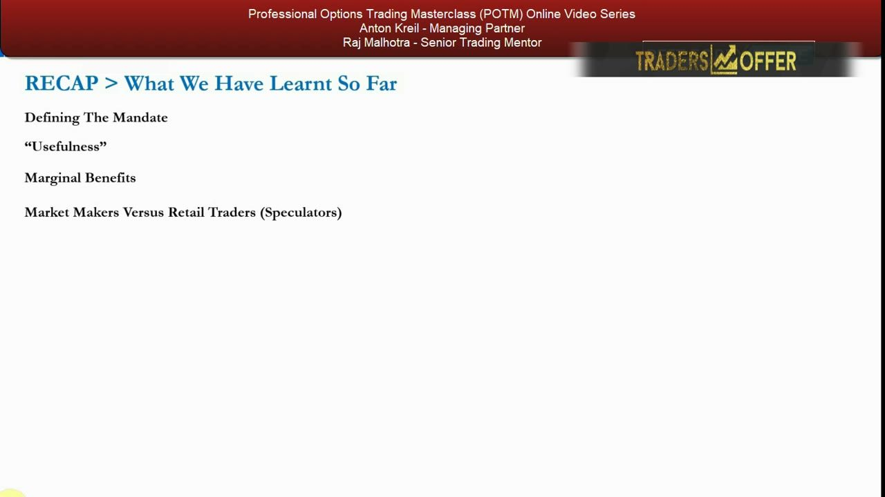
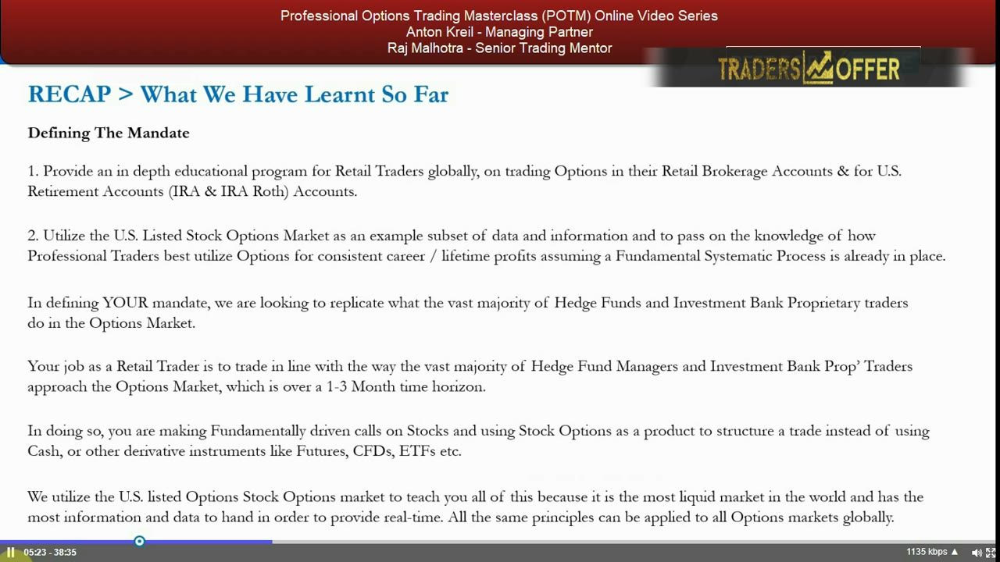
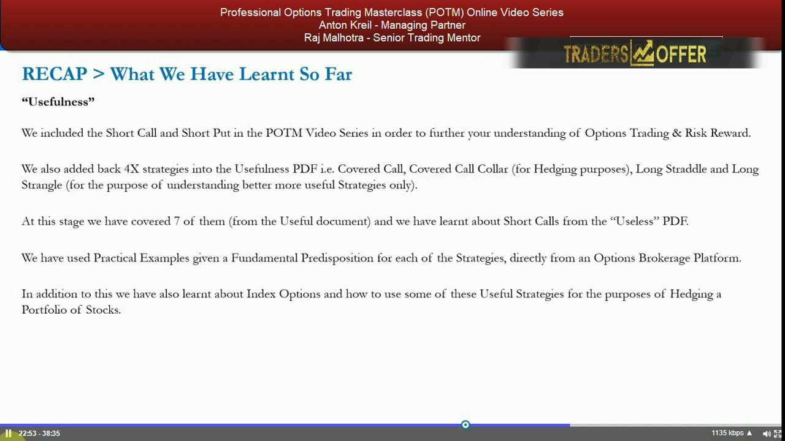
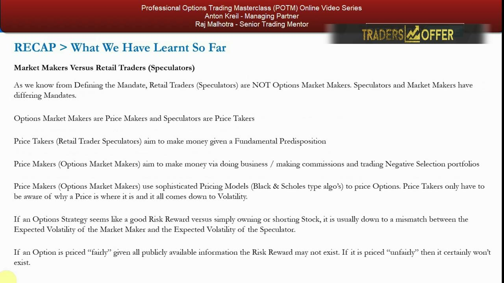
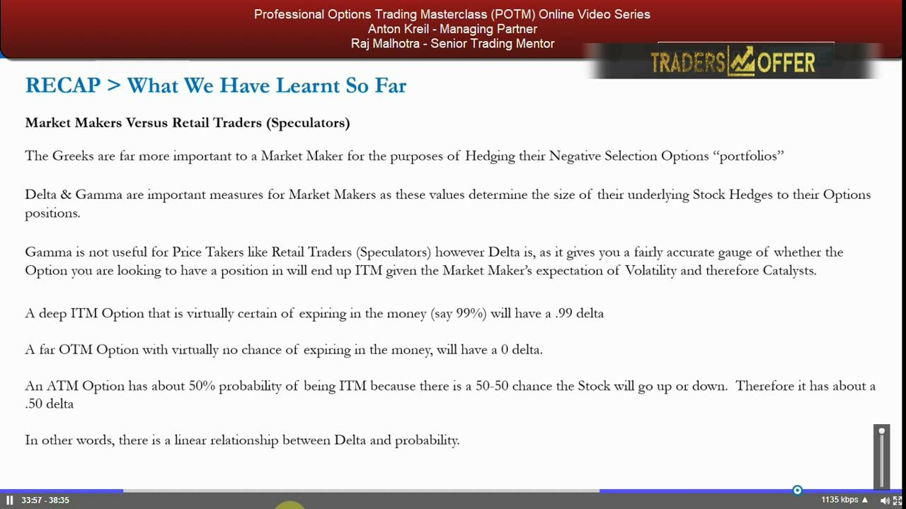

Recap — What We Have Learnt So Far
A stock-take of the options block: the mandate, which strategies passed the usefulness filter, marginal benefit, and how market makers differ from you.
Halfway through the options course, Anton pauses to join the dots. Four themes tie it together: define the retail-speculator mandate, filter strategies by usefulness, weigh marginal benefit, and understand why you are a price taker sitting across from a price-making market maker.
The gist
- The mandate: an in-depth program for retail traders globally, using the US listed stock options market as the example subset, over the same 1-3 month time horizon that hedge fund and investment bank prop traders actually work to.
- Options are for STRUCTURING a trade, not generating the idea — you need a fundamental predisposition (bullish/bearish) first; no view means flat, and flat means no options position (unless it is an effective hedge).
- Of ~53 available strategies, 24 are directional; after filtering for simplicity and risk-reward, 14 are classed useful — captured in the Useful PDF and Useful spreadsheet.
- So far the series has covered 7 useful strategies plus short calls from the Useless PDF; the covered call and covered call collar were added back for hedging, and the Long Straddle & Long Strangle previewed for teaching (learned later).
- Marginal benefit = opportunity cost of capital + risk-reward; options carry timing risk that stock does not, so best practice is a minimum 1:3 risk-reward to get paid for it.
- Market makers are price makers (Black-Scholes-type algos, make commission on negative-selection portfolios); speculators are price takers who only need to know why a price is where it is — it all comes down to volatility.
- Edge comes from a mismatch between the market maker's implied volatility and your expected volatility — and Delta approximates the probability of finishing ITM: .99 deep ITM, ~.50 ATM, 0 far OTM.
Why recap now — four themes to join it all together
- Options trading can be dry and in-depth; it is easy to get lost or bored, so this is a deliberate pause to solidify the approach before going deeper.
- The recap breaks into four areas: Defining the Mandate, "Usefulness", Marginal Benefits, and Market Makers versus Retail Traders (Speculators).
- The aim is a comprehensive understanding of where the course is coming from and why it does things in certain ways.
This is a synthesis video, not new material. Anton stops to consolidate the options block so far so nothing gets lost before the course moves into more complex strategies.

Defining the mandate — trade like a pro over 1-3 months
- Point 1: provide an in-depth educational program for retail traders globally, on trading options in retail brokerage accounts and for US retirement accounts (IRA and IRA Roth).
- Point 2: use the US listed stock options market as the example subset — the most liquid market in the world with the most data — while the same principles apply to all options markets globally.
- The mandate replicates what the vast majority of hedge fund managers and investment bank prop traders do, over a 1-3 month time horizon (forced longer by a decade of low volatility).
- Assumes a fundamental systematic process is already in place; if not, do the Professional Trading Masterclass (PTM) alongside — the two together are a very powerful toolkit.
Your job as a retail speculator lines up with how real professionals actually trade — a 1-3 month horizon, not 500 trades a day. You make fundamentally driven calls on stocks and use options as one product to structure the trade, instead of cash, futures, CFDs or ETFs.

Fundamentals first — options structure the trade, not the idea
- You must have a fundamental predisposition (bullish or bearish) on the underlying before you even consider an option.
- No view means neutral / non-directional, which means flat — a retail speculator with no directional view has no reason to hold options, unless it is an effective hedge to an existing position.
- Do not look at an options chain and let the price generate the idea — that is upside down; go through the fundamental process first, then choose the structure.
- Options are just one option: weigh them against cash and other instruments given fundamentals, marginal benefit, risk-reward and capital considerations.
The single biggest discipline of the course: the idea comes from research, then options are one way to express it. Getting the idea from an options screen or a chart line moving up is exactly the wrong order.
"Usefulness" — which strategies passed the filter
- Of ~53 strategies available to retail traders, 24 are directional; filtering further for simplicity and risk-reward narrows to 14 useful positions (the Useful PDF and Useful spreadsheet).
- Low-usefulness strategies were filtered out on risk-reward — the short naked call, the call ratio backspread and the put ratio backspread.
- The short call (naked) and short put were included to further understanding of options and risk-reward.
- Four strategies were added back into the Useful PDF: the covered call and covered call collar (for hedging), and the Long Straddle and Long Strangle (for teaching only — covered later, NOT taught here).
- So far 7 useful strategies have been covered, plus short calls from the Useless PDF — all via practical examples given a fundamental predisposition, taken directly from a live brokerage platform.
- Index options were also covered — a useful way for retail traders to hedge a portfolio of stocks (most have long-only portfolios and pensions).
The teaching method eliminates conflict of interest and intellectual snobbery — no payoff diagrams, no Black-Scholes internals. The Useful spreadsheet lets you filter on direction, dollar risk, dollar reward, simplicity, and debit vs credit; the more boxes a strategy ticks, the more marginal benefit it tends to have. The Long Straddle and Long Strangle are flagged as coming next, not learned in this recap.

Marginal benefits — get paid for the extra timing risk
- Marginal benefit = opportunity cost of capital + risk-reward of the trade versus simply being long or short stock.
- Long stock: limited downside (zero) and unlimited upside; short stock: unlimited downside and limited upside (zero) — the benchmark to beat.
- A long call has limited dollar risk and unlimited upside; a bull call spread has limited risk and limited upside; covered call / covered call collar have limited risk and limited upside — each can beat stock in specific situations.
- Options carry timing risk (you must be right by a certain time) that stock does not, so best practice is a minimum risk-reward ratio of 1:3 to justify taking that extra risk.
Because an options position adds timing risk on top of directional risk, the payoff has to compensate you. The 1:3 minimum is the rule of thumb the course carries forward into the more complex strategies ahead.
Market makers vs retail traders — price makers vs price takers
- Speculators and market makers have different mandates: market makers are price makers, speculators are price takers.
- Price takers aim to make money given a fundamental predisposition; price makers aim to make money by doing business / making commission, ending up with negative-selection portfolios they then must hedge.
- Market makers use sophisticated pricing models (Black-Scholes-type algos); price takers only need to be aware of WHY a price is where it is — and it all comes down to volatility.
- Edge usually comes from a mismatch between the market maker's expected (implied) volatility and the speculator's expected volatility.
- If an option is priced fairly given all public information, the risk-reward may not exist; if it is priced unfairly, it certainly won't.
- Implied volatility is set high when catalysts could cause big moves and low when there are none — low vol does not mean cheap, high vol does not mean expensive; want to be long options when volatility is on the move (hedging aside).
You are not competing with the market maker at pricing — you cannot out-model their algos. Your only edge is a genuine, fundamentally grounded difference of view on volatility and catalysts within the expiry window. Don't assume you know more than the market maker without a real reason.

The Greeks — Delta as probability of finishing ITM
- The Greeks matter most to market makers, who use them to hedge their negative-selection portfolios; Delta and Gamma set the size of their underlying stock hedges.
- Gamma is not useful for price takers; Delta is, because it gauges whether your option will finish ITM given the market maker's volatility (and catalyst) expectations.
- A deep ITM option almost certain to expire ITM (say 99%) has a .99 delta; a far OTM option with virtually no chance has a 0 delta.
- An ATM option has about a 50% probability of being ITM (50-50 the stock goes up or down), so about a .50 delta — a roughly linear relationship between Delta and probability.
- Later the series shows how to back out (via backwardation) the market maker's implied volatility to judge if an option is priced fairly — Chris Quill covers this.
For a retail speculator, Delta doubles as a rough probability of success on the position. That single read — .99 deep ITM, ~.50 ATM, 0 far OTM — is the practical takeaway before the course goes deeper into volatility and Delta later on.

Glossary
- Fundamental predispositionA research-driven bullish or bearish view on the underlying stock, formed before any options position — no view means flat.
- MandateThe retail speculator's job: fundamentally driven stock calls over a 1-3 month horizon, using options to structure trades — mirroring hedge fund and prop desks, not market makers.
- Marginal benefitThe advantage of an options structure over simply being long or short stock, defined by opportunity cost of capital plus risk-reward.
- Usefulness filterThe screen narrowing ~53 strategies to 14 useful ones via direction, simplicity, dollar risk/reward and debit/credit — captured in the Useful PDF and spreadsheet.
- Price maker vs price takerMarket makers make prices (via pricing algos, earning commission on negative-selection books); speculators take prices and only need to know why a price is where it is.
- Negative selection portfolioThe book of positions a market maker is left with by taking the other side of speculators' trades — positions they don't want and must hedge, compensated by commission.
- Volatility mismatchThe gap between the market maker's implied volatility and the speculator's expected volatility — the usual source of any real risk-reward edge.
- DeltaApproximates the probability an option finishes in the money: .99 for deep ITM, about .50 for ATM, 0 for far OTM — a roughly linear link to probability.
- Timing riskThe added risk in options that you must be right by a certain expiry — absent in a plain stock position, and why a minimum 1:3 risk-reward is required.